Upwork Pro: the team guide
How to do the daily work, with Claude and without it, how to add and manage everything proposals are built from, and how to read the numbers. Each picture has numbers on it; the list under the picture says what each one is. Click a picture to see it full size. Setting up a fresh copy? Read Setting up from zero.
Start here
Upwork Pro takes an Upwork job from the moment you find it to the day the client answers: it screens the job against our rules, picks the past projects that prove we can do it, writes the proposal in the right profile's voice, and then keeps track of what the client did. Everything it learns ends up in Reports, so we can see what works.
| You are | You can |
|---|---|
| Employee | Screen jobs, write and send proposals, update their status, see your own jobs and reports, read the library and the writing guide, connect your own Claude. |
| Manager | All of that for everyone's jobs, plus add and edit projects, industries, proposal types, the writing guide and signals, and read the Flag review. |
| Admin | Everything: also the tag dictionary, Upwork profiles, Loom videos, rules, gate instructions, the reviewer, settings, users and logs. Only an admin can discard a job (and restore it). |
How every page is laid out
Every page works the same way, so once you know one you know them all.
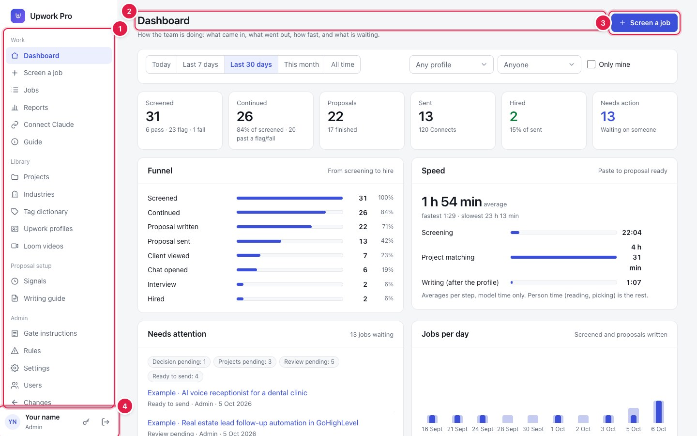
- 1The sidebar. The daily work first: Dashboard, Screen a job, Jobs, Reports, Proposal feedback and Flag review. Then Library, Writing, Screening and Admin: click one to open its pages (the others close). Guide and Connect Claude are in the small row above your name. On a small screen, the button next to Upwork Pro shrinks the sidebar to icons (hover one for its name).
- 2The title of the page, with one line under it saying what the page is for.
- 3The page's main button is always at the top right.
- 4You, your role, and Sign out.
Signing in
Every password box has a Show button, so you can check what you typed.
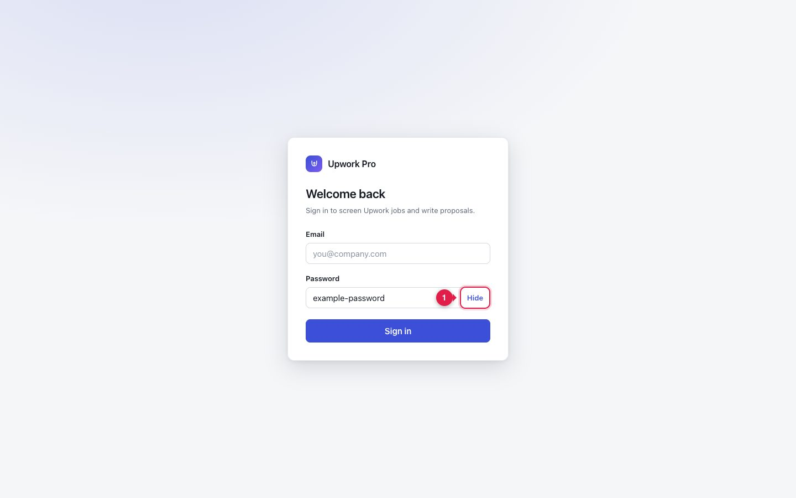
- 1Show and Hide.
Change your own password
Press the key button next to your name, at the bottom of the sidebar. Everyone can do this.
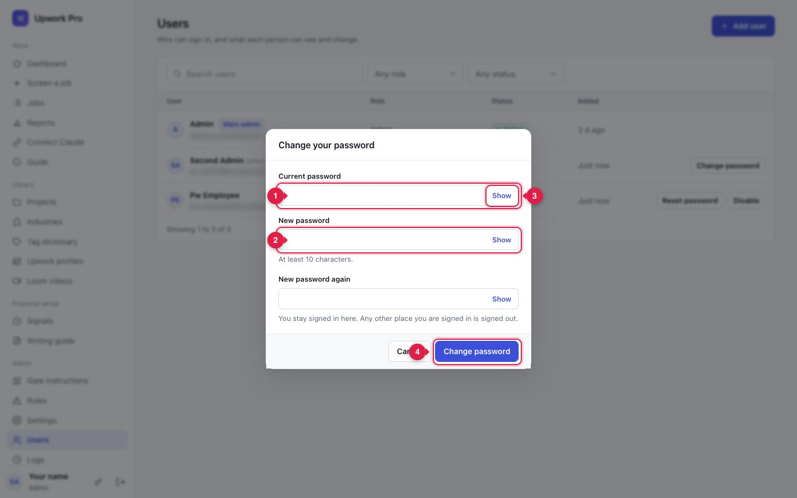
- 1Your current password.
- 2The new one, at least 10 characters, typed twice.
- 3Show what you typed.
- 4Change password. You stay signed in here; any other place you are signed in is signed out.
On a phone
Everything works on a phone. The sidebar becomes a Menu button.
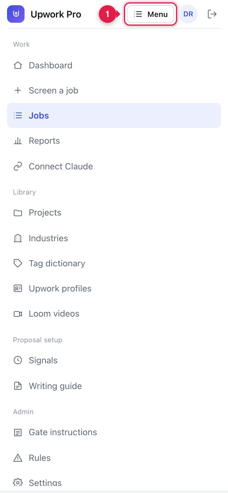
- 1Press Menu to open the links.
The daily job, without Claude
One job, four steps: decide, projects, profile and proposal (choose its type, then review it). After it is sent, you keep its status up to date on the Overview tab. The job page shows the step you are on and the button for it is always at the top right of the tab row.
1. Screen a job
Open Screen a job in the sidebar.
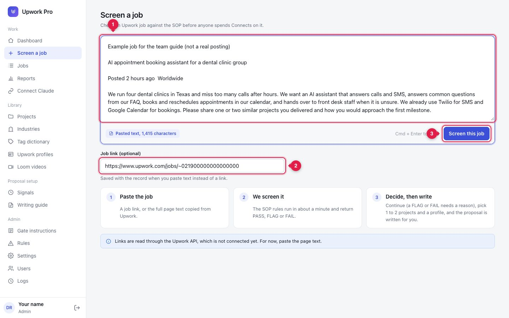
- 1On Upwork, select the whole job page (Cmd + A, Cmd + C) and paste it here. Include the "About the client" part: the screening depends on it.
- 2Paste the job's link too. It is saved with the job and stops the same job being screened twice.
- 3Press Screen this job (or Cmd + Enter).
It screens in about a minute
You can leave the page; the result is saved and the job is in your Jobs list.
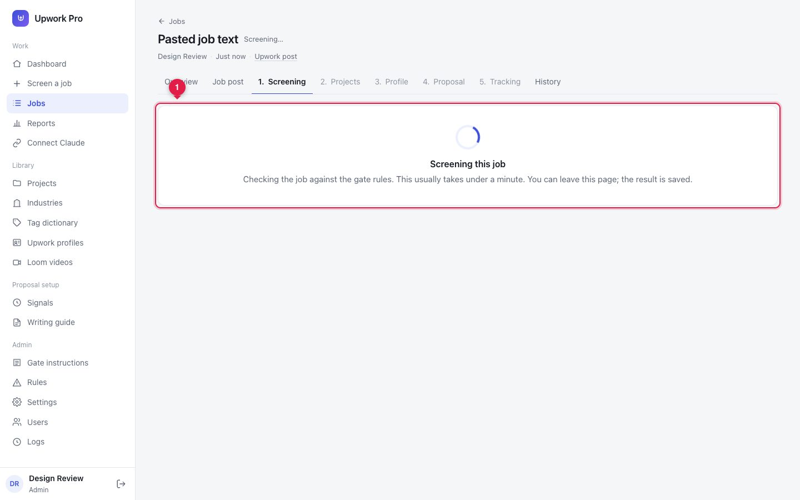
- 1The page updates by itself when the screening is done.
2. Decide: continue or skip
The gate answers Pass, Flag (needs a human look) or Fail (breaks a rule). It advises; you decide.
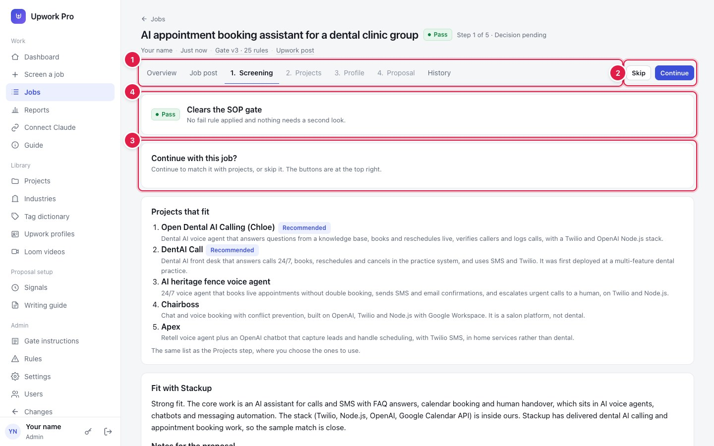
- 1The tabs of the job. A tick means the step is done. Steps you cannot reach yet are grey.
- 2Skip or Continue. Every button of the job page is here, at the right end of the tab row.
- 3The decision. On a Pass, just continue.
- 4The result and why.
Under it you find how well the job fits us and notes for the proposal.
When the gate says Flag or Fail
You can still continue, but you must say why. The reason stays on the record, where managers can read it, and the reasons are counted in the Flag review.
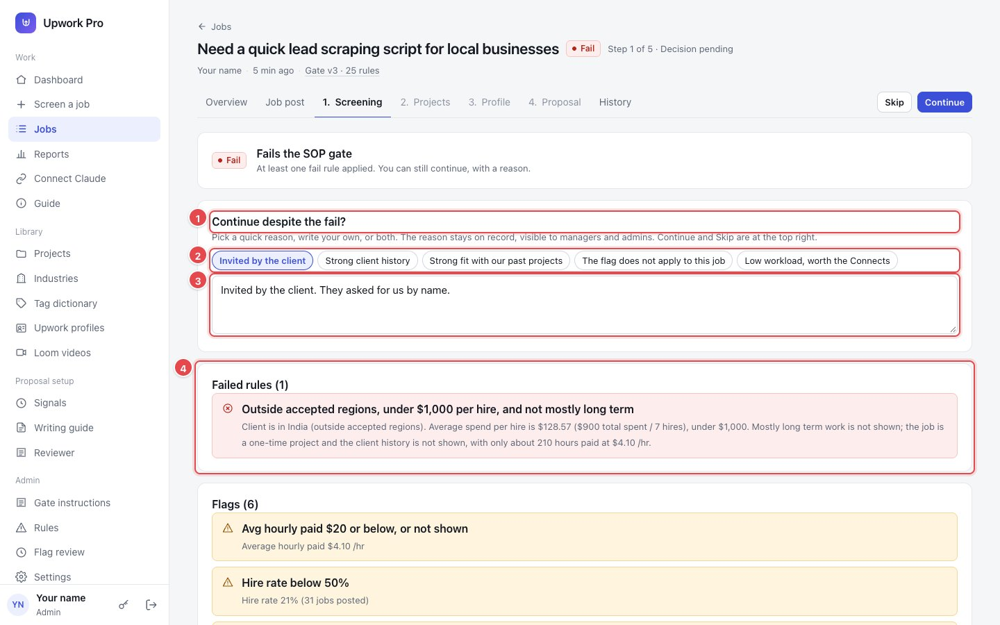
- 1The question: continue despite the flag or fail?
- 2Quick reasons. One click writes a reason into the box; click it again to take it out. Pick as many as fit. An admin sets the list in Settings.
- 3The reason. Add your own words around the quick reasons ("They asked for us by name.").
- 4Each rule that fired, with the value behind it (for example the client's real hire rate).
A PASS, or a FLAG with no more than two flags, is matched with projects by itself straight after the screening. More flags, or a FAIL, wait until someone continues, so nothing is spent on jobs we are likely to skip. The number is a setting.
Skipping a job: say why
Press Skip and a small window asks for the reason. It takes two seconds and it is what lets us report on the jobs we pass on.
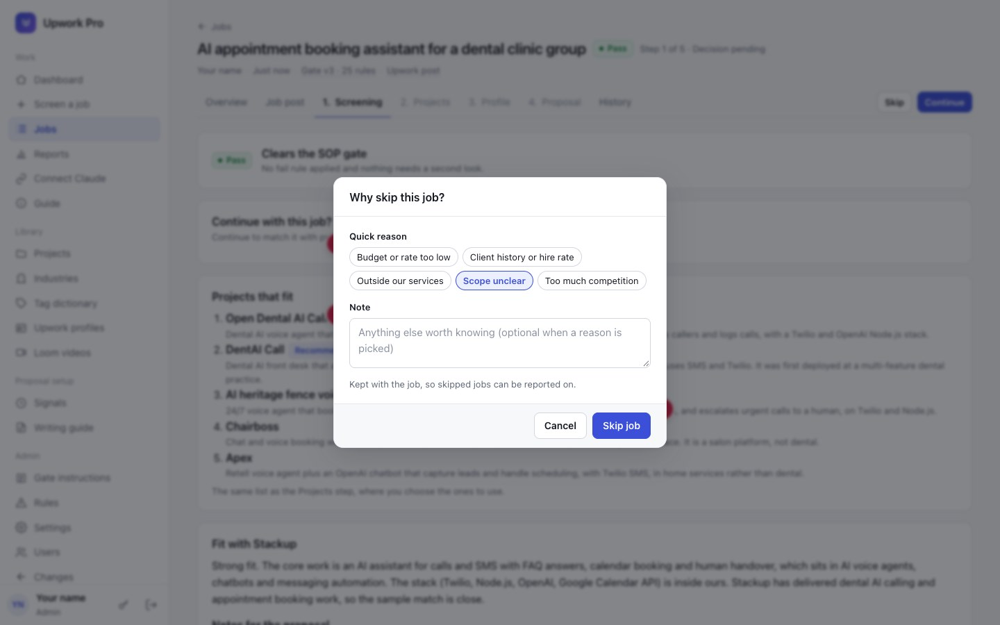
- 1Pick the quick reason that fits.
- 2Add a note if there is more to say.
- 3Skip job. The job moves to Not pursued, with your reason on it.
3. Pick the projects
The job is read for the work it needs, and the projects that prove that work are listed. A project is only recommended when it shows the same kind of work; among those, the same industry comes first.
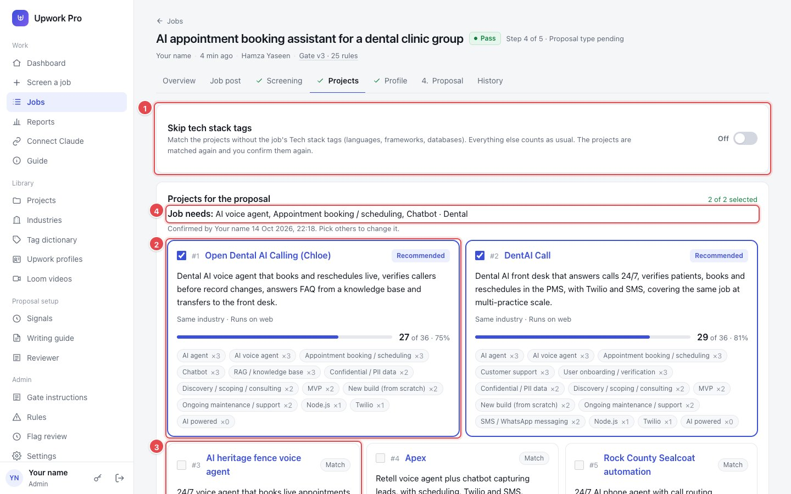
- 1Skip tech stack tags. Turn it on to match the projects again without the job's languages, frameworks and databases; everything else counts as usual. Use it when the stack does not matter to this client. It cannot change once a proposal is written.
- 2A recommended project, already ticked. Under its name: why it fits, whether it is the same industry, and the tags it shares with the job.
- 3The other matches. Click a card to tick or untick it. To swap, untick one first.
- 4What the job needs. Press Confirm and continue at the top right; the count there says how many you have picked out of how many you may.
The list is the same one the Screening tab shows under "Projects that fit", so the two never disagree.
Not there? Show more
Scroll to the end of the list.
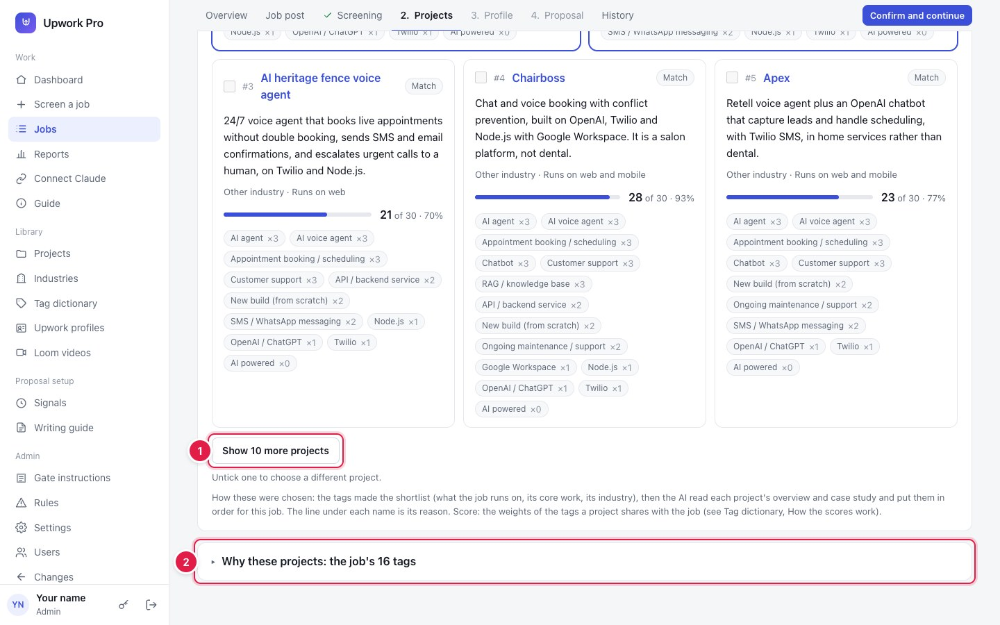
- 1Show 10 more projects lists the next best matches.
- 2Open this to see the tags the job was given, and so why these projects came up.
4. Pick the profile
Which Upwork profile sends this proposal. The proposal is written in that profile's voice, with its rate, links and rules.
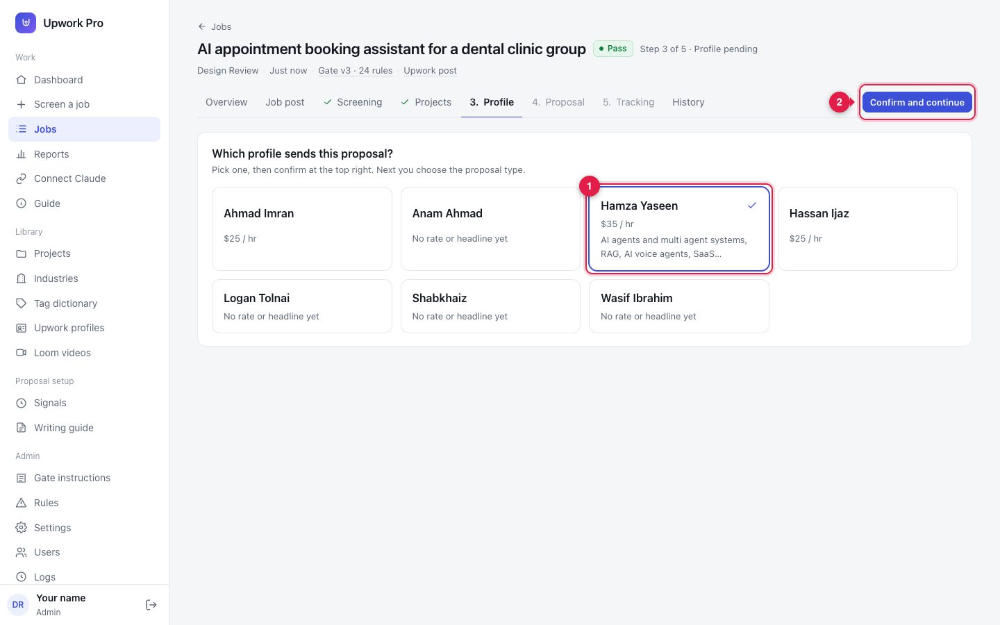
- 1Click the profile.
- 2Press Confirm and continue.
Choose the type of proposal
Nothing is written until you choose. The types that suit this job come first, each with the reason it fits.
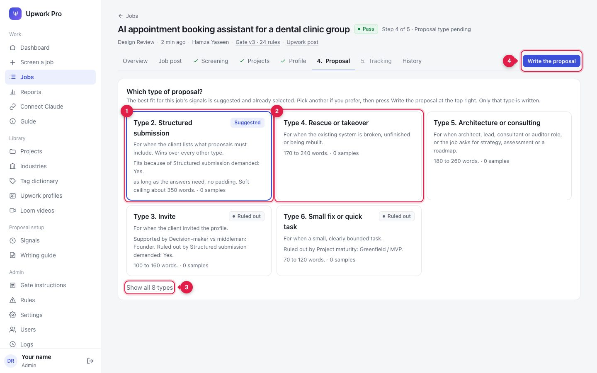
- 1The suggested type: the best fit for what the job post says. It is already selected.
- 2The other types offered, with why each fits or does not. Click one to choose it instead. "Ruled out" means something in the post speaks against it; you can still pick it.
- 3Show all types lists every proposal type.
- 4Press Write the proposal. Only the type you chose is written.
Send a Loom video with it?
On the same screen, under the types. When the job post asks for a video, the one that fits best is already selected.
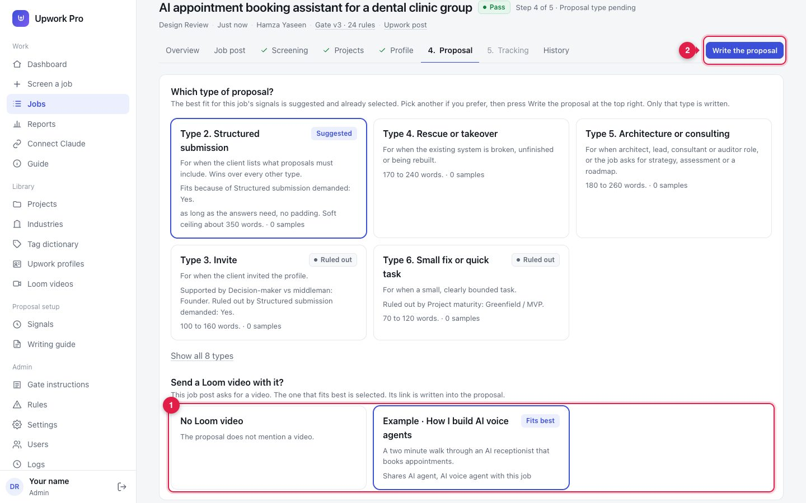
- 1Pick a video of the sending profile, or No Loom video. The link of the one you pick is written into the proposal, and it is recorded on the job for the reports.
- 2Then press Write the proposal.
If the client asks for a video and the profile has none, the screen says so: an admin adds videos under Loom videos.
The proposal is written for you
Usually it is there within seconds: a first draft is written in the background as soon as the projects are matched, and only the parts you chose differently are redone. You can leave and come back.
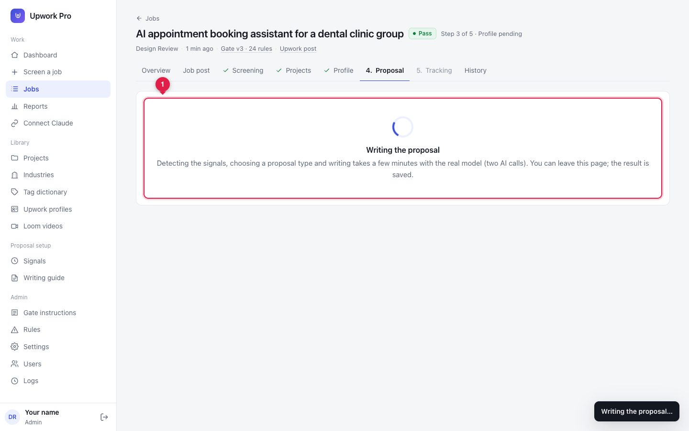
- 1It writes the type you chose, with your projects, profile and video.
5. Review the proposal
Read it. It is your proposal: change anything.
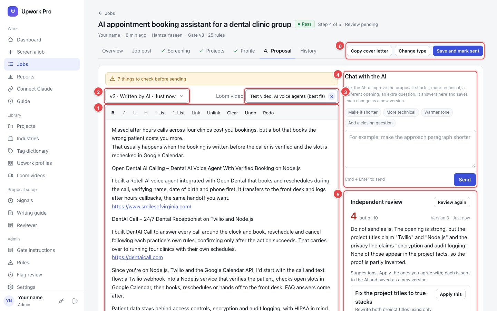
- 1The proposal: the cover letter only. Edit it like any document.
- 2Every save, chat change, update and restore is kept as a version. Pick an older one here to see it or bring it back.
- 3Loom video: pick another video, or none, at any time. Only the video line changes, at once; nothing is written again.
- 4Beside the proposal, one card with a tab for each tool. Chat with the AI to change it: "make it shorter", "add a question about their calendar". Each answer is saved as a new version. Feedback records what is wrong in it, to fix the setup later.
- 5Review: a second reader scores the proposal out of 10, and the score shows on the tab. See below. Experience appears when the client asks for something we have no record of: answer Yes or No there.
- 6Copy cover letter puts the letter on your clipboard. Change type writes it again as another proposal type. Save and mark sent when it is submitted on Upwork.
Above the text, a yellow line lists things to check before sending (for example a figure the writer could not find in our facts), and a blue button says how many questions about our experience are waiting. Under the text, How this was written opens the signals and the proposal type ranking.
The screening answers, apart from the proposal
When the client asks questions in Upwork's own questions section, each is answered apart from the cover letter, on its own Screening answers tab next to the Cover letter tab. A dot on a tab means unsaved changes. Editing or removing text in the proposal never touches them.
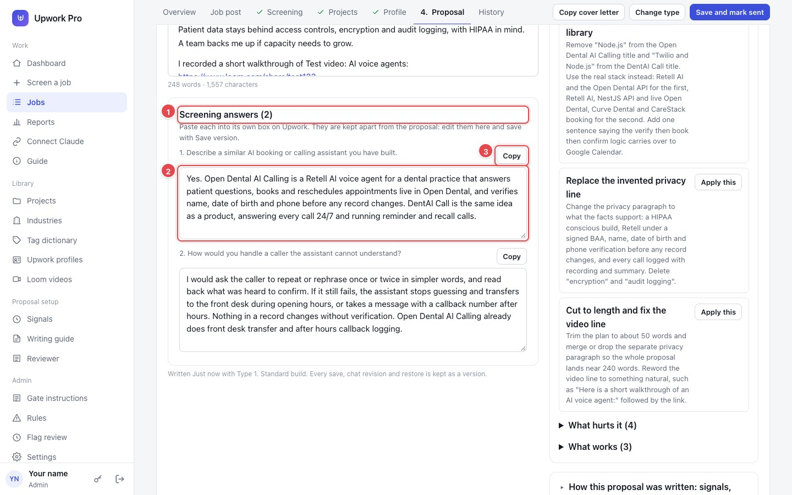
- 1The questions and how many.
- 2The answer, in its own box. Edit it here; Save version saves the letter and the answers together.
- 3Copy each answer into its own box on Upwork.
Changing the projects, the profile or the video after writing
A proposal is made of parts: the letter, one block per project, the video line and the sign off. Change the projects or the profile on their tabs, or the video here, and only that part is redone, as a new version: a new project takes a few seconds, a video or a profile no time at all. The letter stays as it was. To write the letter again in another profile's voice, use Change type or write it again.
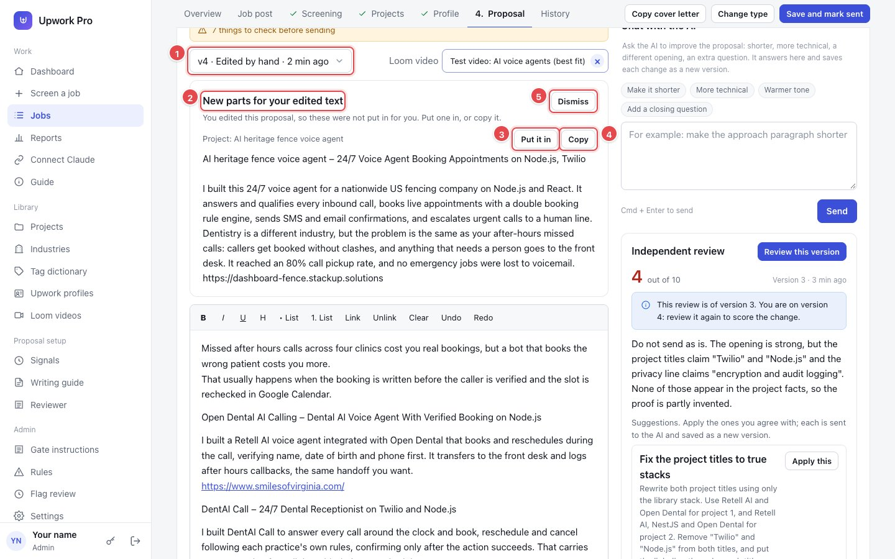
- 1Once you have edited the text yourself, your text is never overwritten.
- 2Instead, the new parts are offered here.
- 3Put it in adds it at the end of your text: move it where it belongs, then save.
- 4Copy it to paste it yourself.
- 5Dismiss when you do not want them.
The independent review
As soon as a proposal is written, a separate reader checks it against the job, the profile, the projects and our writing rules. It did not write the proposal, so it does not go easy on it. It is advice and never forces a change: you can always copy the proposal as it is. How it reviews is set by an admin on the Reviewer page.
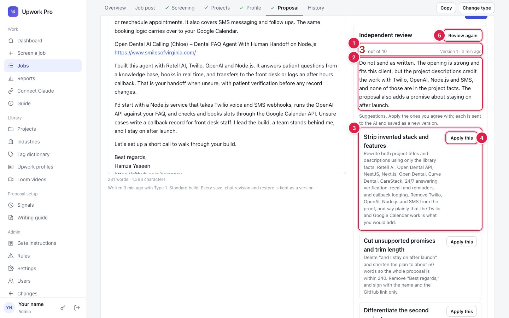
- 1The score out of 10, and which version it is for.
- 2The verdict in a few lines: send it or not, and why.
- 3A suggestion: what to change, in words the AI can act on. There are up to three.
- 4Apply this sends that suggestion to the chat. The AI revises the proposal and saves it as a new version.
- 5Review again scores the newest version. After a change, the panel tells you the review is of an older version.
Further down, What hurts it and What works open to show each point. A low score most often means the proposal claims something our project facts do not say: fix that first.
Send it on Upwork, then mark it as sent
Copy the proposal, paste it into Upwork and submit it there. Then press Save and mark sent. One window records everything.
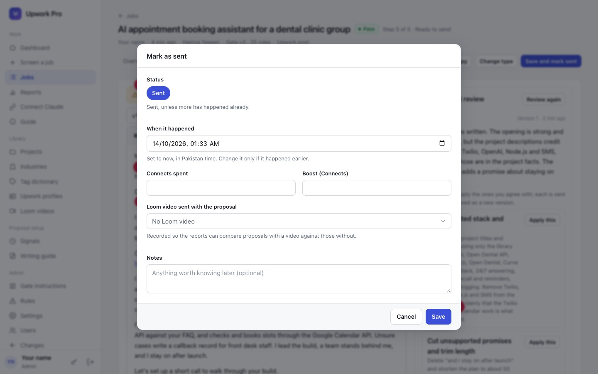
- 1The status: Sent.
- 2The Connects it cost, and any boost.
- 3The Loom video you sent with it, if any. This is how we learn whether videos help.
- 4Save.
There is no Tracking tab any more. After this, the job's status lives on its Overview tab.
Updating the status takes one click
Do this every time something happens on Upwork. It is what the reports are built from.
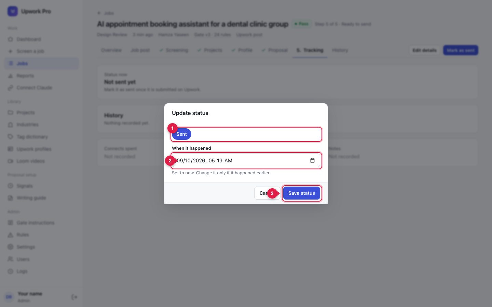
- 1Pick what happened: Sent, Viewed, Chat opened, Interview, or how it ended. The next likely one is already chosen.
- 2It is set to now. Change it only if it happened earlier.
- 3Save.
When a proposal is lost, say why
Not hired, No response, Withdrawn and Job closed all need a reason, so we can learn from them.
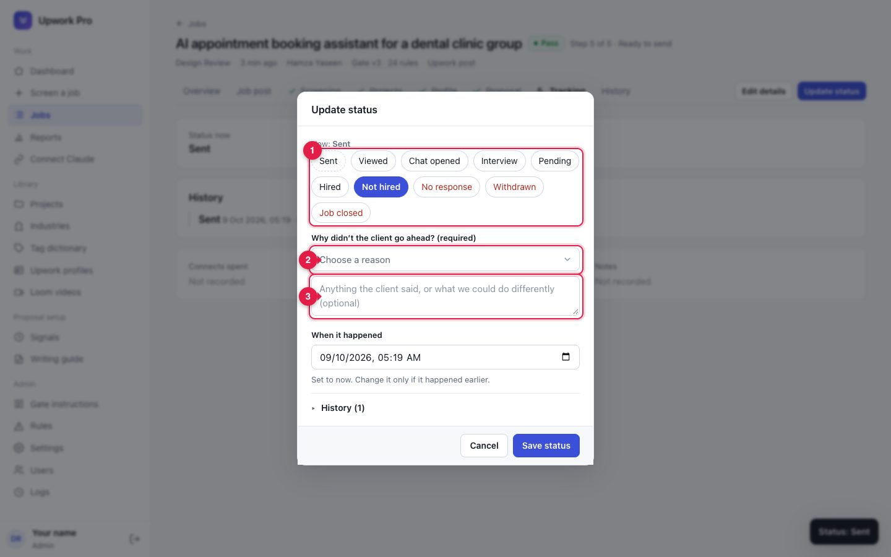
- 1The outcome.
- 2The reason, from the list.
- 3Anything the client said, in your own words.
Change what it cost
On the Overview tab, press Edit details.
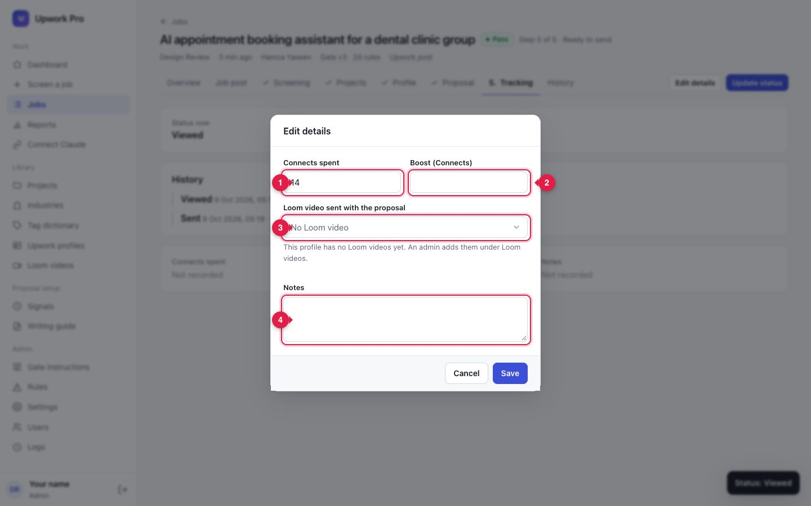
- 1The Connects the proposal cost.
- 2Extra Connects if you boosted it.
- 3The Loom video you sent with it, if any. This is how we learn whether videos help.
- 4Notes.
Overview: where the job stands
The first tab of every job. After a proposal is sent, this is where you follow it.
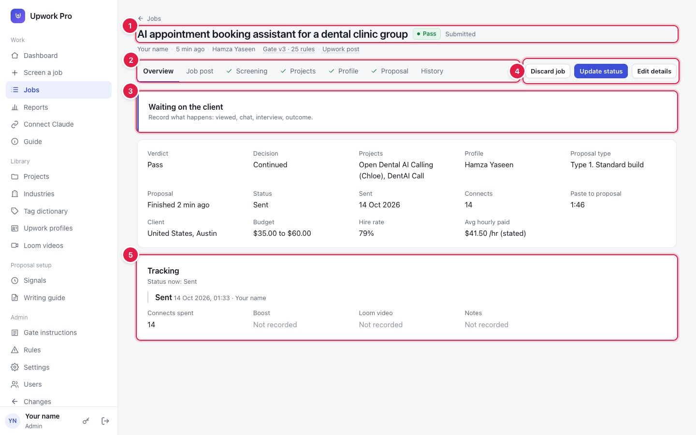
- 1The title, the gate result and where the job stands.
- 2Overview, the job post as fields, the four steps, and History.
- 3What is next.
- 4Update status each time something happens on Upwork (viewed, chat, interview, the outcome). Edit details for Connects, boost, the Loom video and notes. Admins also see Discard job.
- 5Tracking: the status now, everything that happened with its date, and what it cost.
Job post: the posting as fields
The whole post, read into fields at the same time as the screening: terms, skills, description, screening questions, the client and their history.
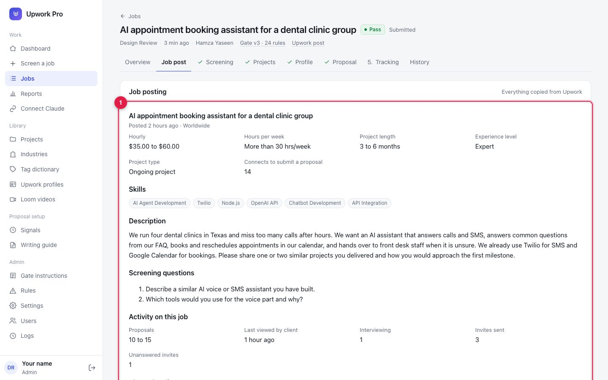
- 1The full pasted text is one click away at the bottom.
History: every step and who did it
When something looks wrong, look here first.
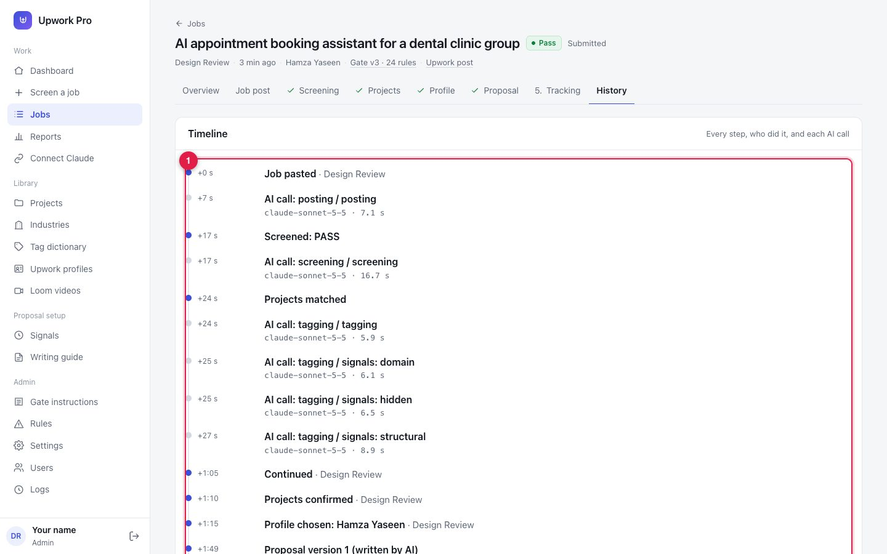
- 1Each step with how long after the paste it happened, who did it, and each AI call.
Finding and following your jobs
The Jobs list
Every job, from screening to outcome.
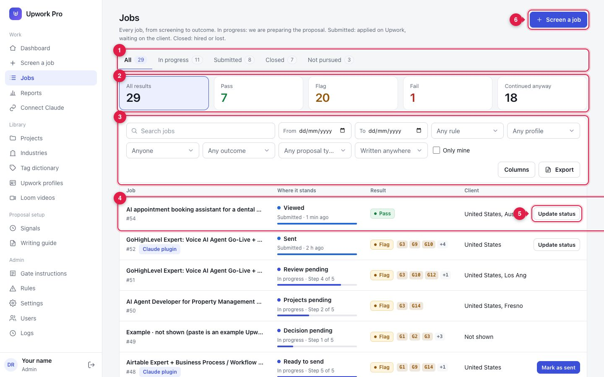
- 1In progress: we are preparing the proposal. Submitted: sent, waiting on the client. Closed: hired or lost. Not pursued: skipped or failed.
- 2Click a tile to see only Pass, Flag or Fail.
- 3Search and filters. They apply at once.
- 4Click a row to open the job. Click "Where it stands" or the result for a quick look without leaving the list.
- 5The one thing to do next for that job.
- 6Screen a new job.
Filters
A filter you have set is outlined, with its own × to remove it.
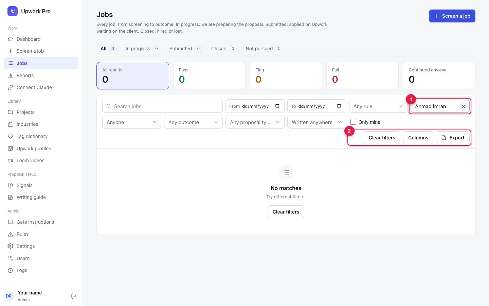
- 1A chosen filter.
- 2Clear filters removes them all. It only shows while something is filtered.
Your filters are kept in the link. Press Back from a job and you return to the same view. You can also bookmark or share a filtered list.
Following up: the Submitted tab
Open this tab every day.
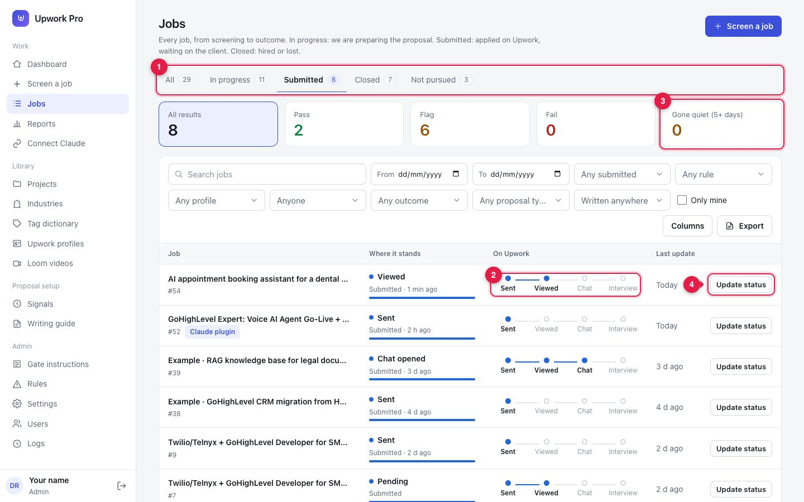
- 1Submitted.
- 2How far each proposal got: Sent, Viewed, Chat, Interview.
- 3Gone quiet: sent and nothing recorded for 5 days. Click it to see them.
- 4Update the status in one click.
A quick look at a job
Click "Where it stands" on any row.
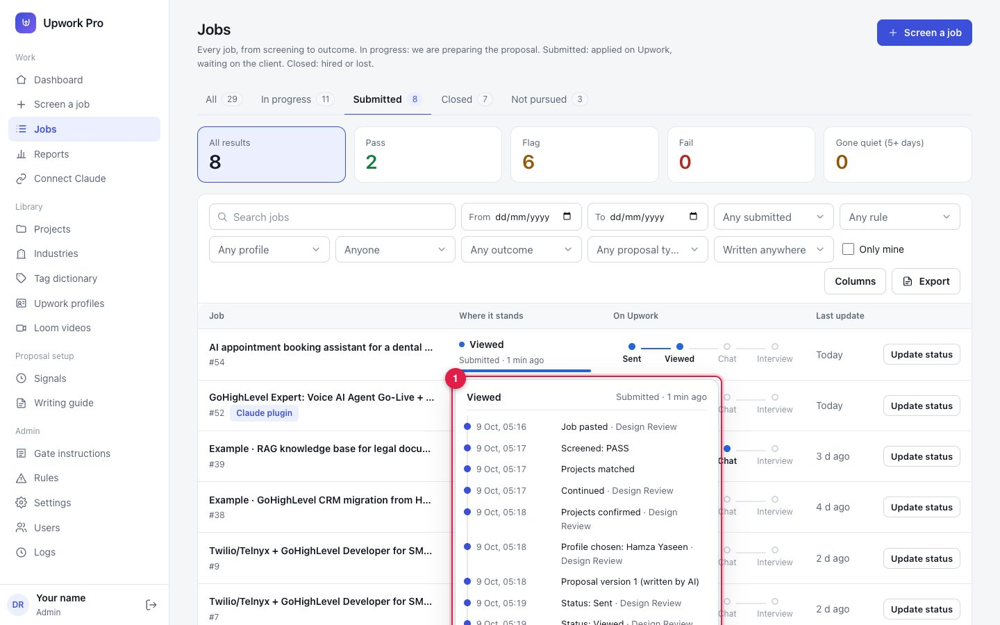
- 1The job's journey so far, without opening it.
Choose your columns
Press Columns. Your choice is remembered for each tab, on this computer.
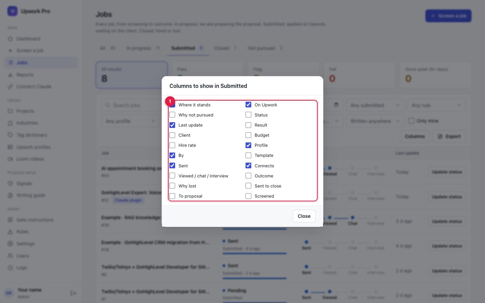
- 1Tick what you want to see.
Discard a job (admin only)
For test jobs and mistakes. On the job's Overview tab, press Discard job.
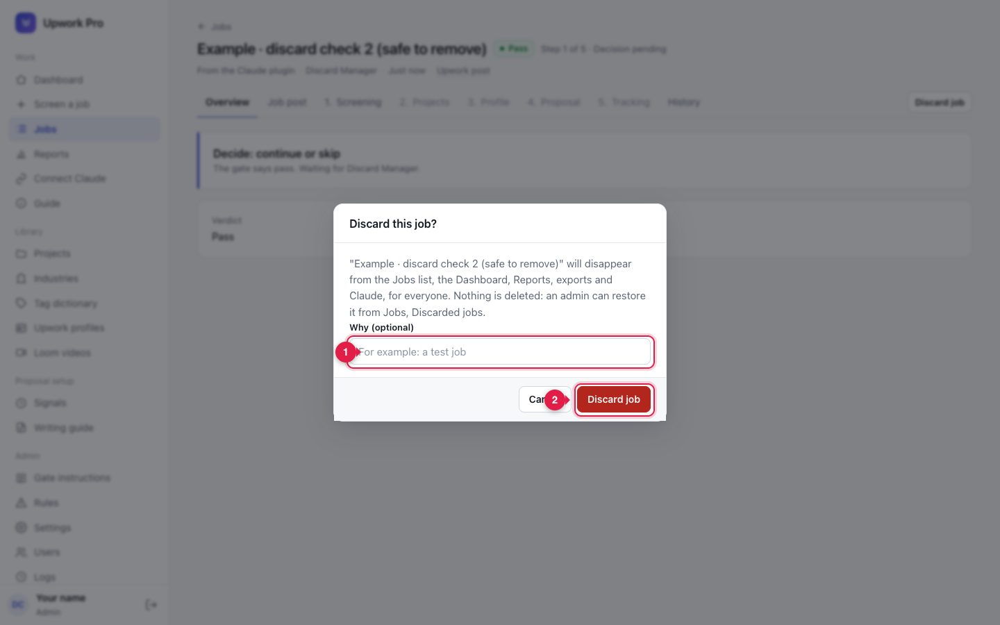
- 1Say why, if you like.
- 2Discard job. It disappears from the Jobs list, the Dashboard, Reports, exports and Claude, for everyone.
Nothing is deleted. Employees and managers cannot discard or see discarded jobs.
Bring a discarded job back (admin only)
In the Jobs list, change the Live jobs filter to Discarded jobs.
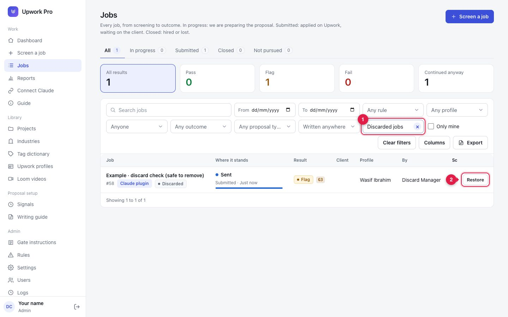
- 1The filter. Only admins have it.
- 2Restore puts the job back exactly as it was.
Export
Press Export to get exactly the jobs on screen (with your filters) as Excel or CSV, with every detail: the post, the result, the proposal text, every status and date.
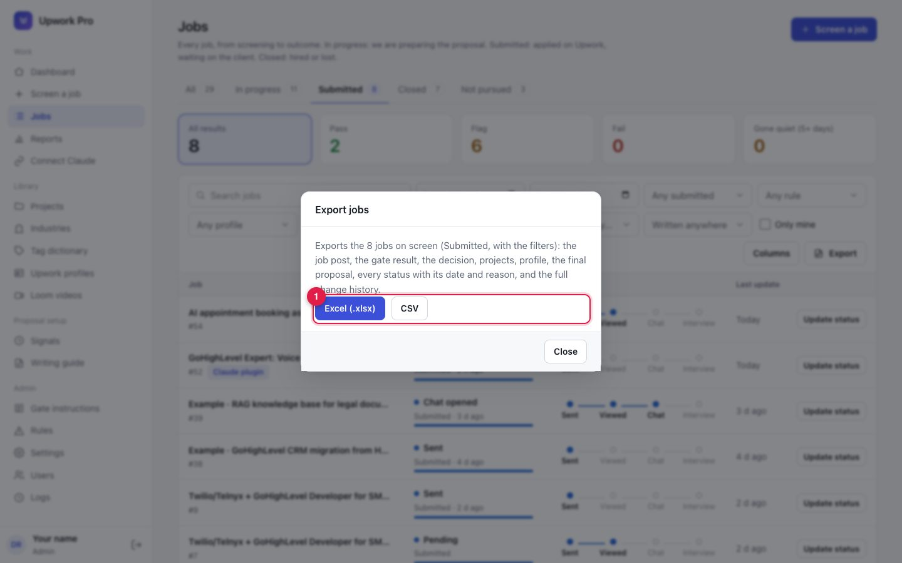
- 1Excel or CSV. Up to 5,000 jobs.
Working with Claude
You can do the same work inside Claude with the Stackup proposals plugin: Claude screens the job, matches projects and writes the proposal, and saves everything into Upwork Pro under your name. The library, rules and writing guide it uses are the ones in Upwork Pro, so both ways give the same result.
Connect your Claude (once)
Open Connect Claude.
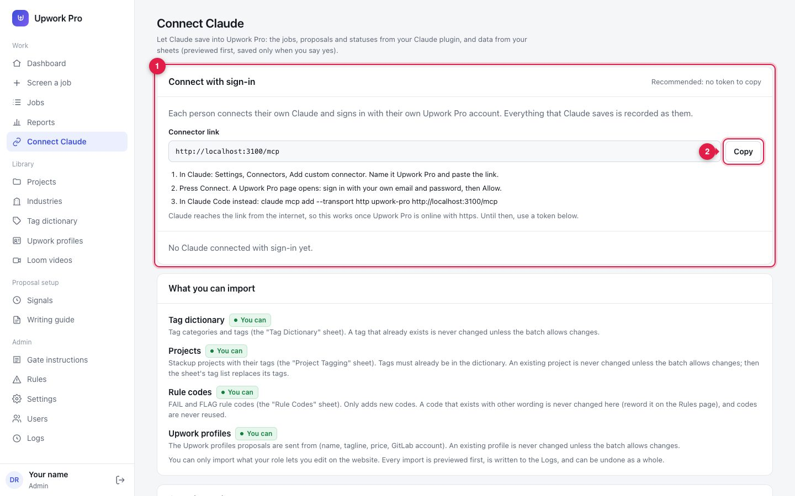
- 1The connector link and the steps. In Claude: Settings, Connectors, Add custom connector, name it Upwork Pro, paste the link, press Connect, then sign in with your own Upwork Pro email and password and press Allow.
- 2Copy the link.
Everything your Claude saves is recorded as you. Never share your sign-in or a token.
Or use a token (when Upwork Pro runs on your own computer)
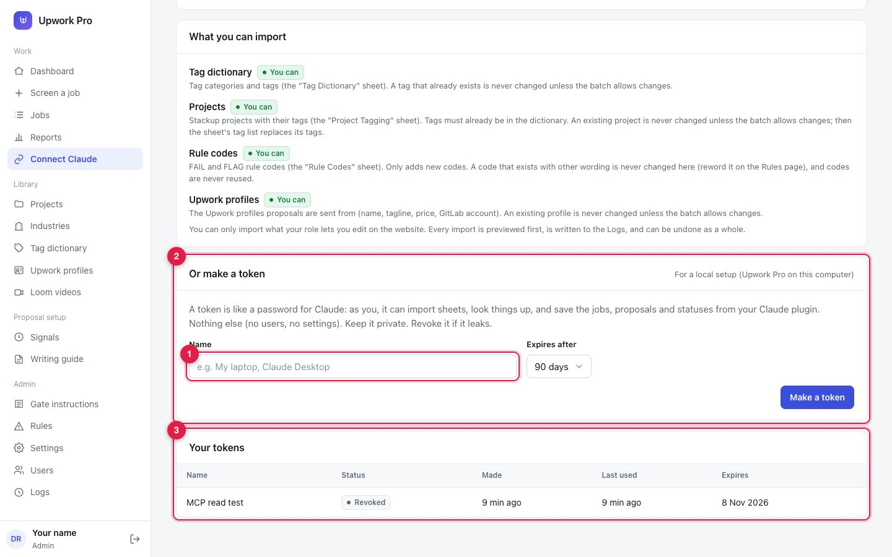
- 1Name the token and press Make a token. Copy it at once: it is shown one time only.
- 2Paste the settings it gives you into Claude Desktop.
- 3Your tokens. Revoke one the moment you think someone else has it.
Get the plugin
On the same page, under the connection. Everyone can download it.
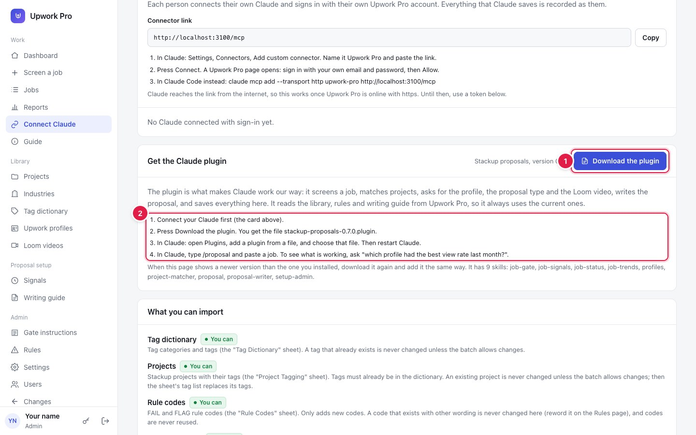
- 1Download the plugin. You get one file, named with its version.
- 2Add it in Claude: open Plugins, add a plugin from a file, choose the file, then restart Claude.
When this card shows a newer version than the one you installed, download it again and add it the same way.
What to say to Claude
| You want to | Say | What happens |
|---|---|---|
| Write a proposal | /proposal and paste the job page text and link | Claude screens the job (on a flag or fail it offers the same quick reasons as the app), then asks for the profile (no rate: you set that on Upwork), shows the projects Upwork Pro matched, asks for the proposal type and the Loom video in one question, writes the cover letter and the screening answers apart, and shows the independent review. Every step is saved in Upwork Pro as it happens, alongside the next step, so saving costs no time. Stop halfway and say "continue the dental clinic job" in a new chat: it carries on from where you stopped. |
| Match without the stack | "Match again without the tech stack tags" | Upwork Pro matches the projects again without the job's languages, frameworks and databases, and Claude shows the new list. |
| Improve a draft | "Apply suggestion 1", "Review it again" | After the review Claude just waits; it never pushes you to change anything. Name a suggestion and Claude revises the draft that way, saves it as a new version and gets a fresh score. You can approve the proposal as it is at any score. |
| Check a job only | "Is this job worth applying to?" and paste it | Pass, Flag or Fail with the rules and reasons. |
| Record what happened | "Mark the dental clinic job as sent", "The client viewed it", "We lost it, they hired someone else" | The status is saved in Upwork Pro with its time. A loss needs a reason; Claude asks if you did not give one. |
| See what is waiting | "Which of my proposals are waiting on the client?" | The list from Upwork Pro. |
| Review the flags | "Which flags could I relax?" | The Flag review as a table: for each rule, how often people continued past it, why, and how those jobs did against clean passes. Changing a rule is still an admin's call. |
| Find trends | "Which profile had the best view rate last month?", "Pull every job sent in September and compare the proposals that got a chat with those that did not" | Claude reads the numbers, or the jobs themselves, from Upwork Pro and tells you what it found, with the sample size. |
| Bring in a sheet | "Import the Project Tagging sheet" | Claude shows what would be added or changed. Nothing is saved until you say yes, and an import can be undone as a whole. |
Adding and managing the library
The library is what proposals are built from. Keep it true: the writer only says what the library says.
Projects
Our delivered work. Managers and admins can add and edit.
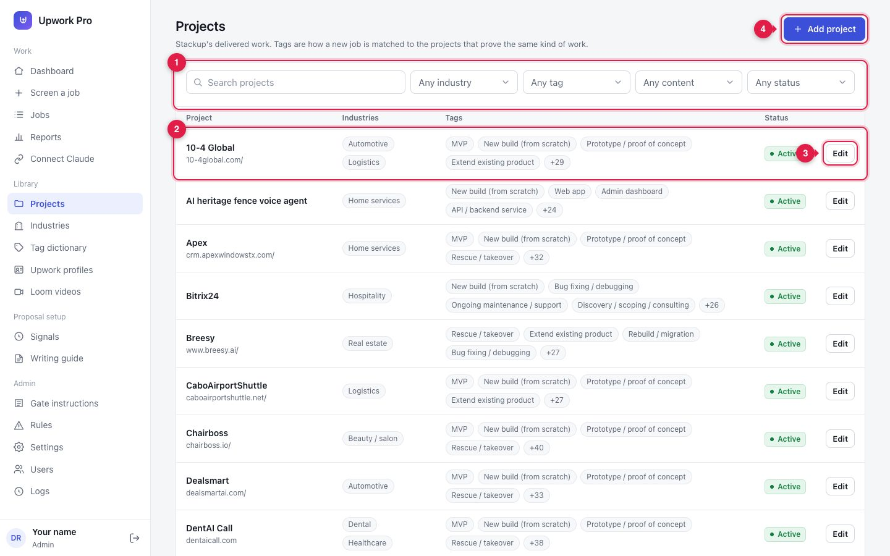
- 1Search, and filter by industry, tag, content (for example "No case study") or status.
- 2Click a row to see the whole project.
- 3Edit.
- 4Add project.
Add or edit a project
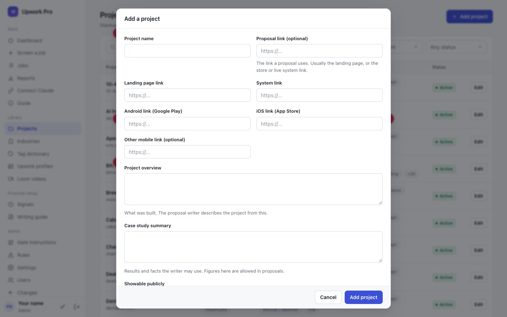
- 1The name, as we call it.
- 2The link a proposal shows: usually the landing page, or the store or live system link.
- 3The Android link (Google Play).
- 4The iOS link (App Store). Mobile apps have one box per store, so the writer can show the right one.
- 5What we built. The writer describes the project from this, so write it plainly and truthfully.
The case study summary is where results and figures go. Only figures written there may appear in a proposal. The head and the buttons stay in view while you scroll.
Industries and tags decide when a project is suggested
Scroll down in the same window.
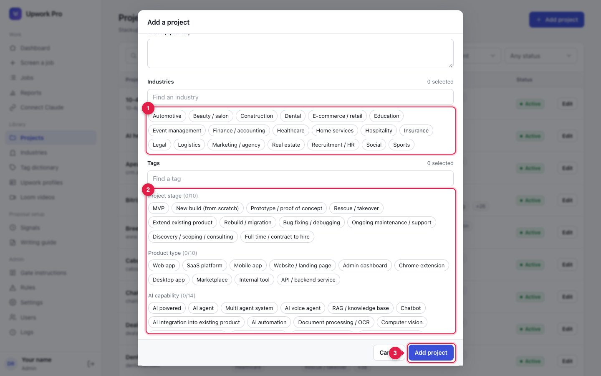
- 1The industries the project belongs to. Projects from the job's own industry are suggested first.
- 2The tags. A job is matched to the projects that share its tags, so tag honestly: only what the project really did.
- 3Save.
To stop using a project without losing it, untick Active. Delete is in this window too, for mistakes only.
A project's page
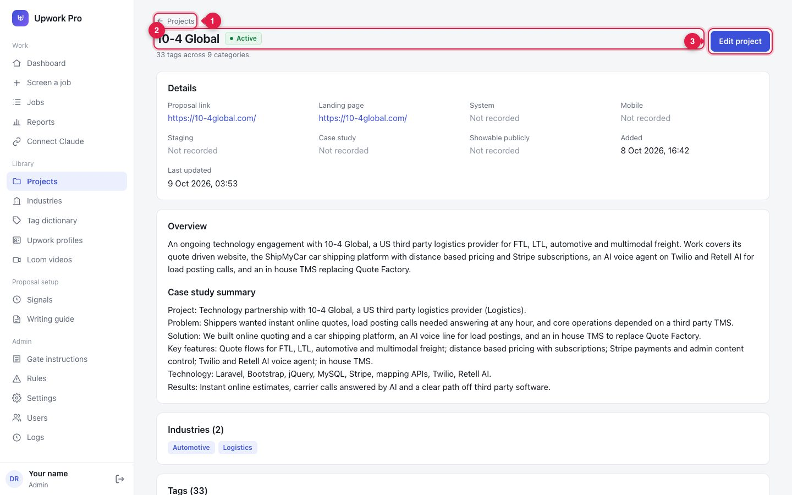
- 1Back to the list, with your filters as you left them.
- 2The name and whether it is active.
- 3Edit project.
Edit an industry
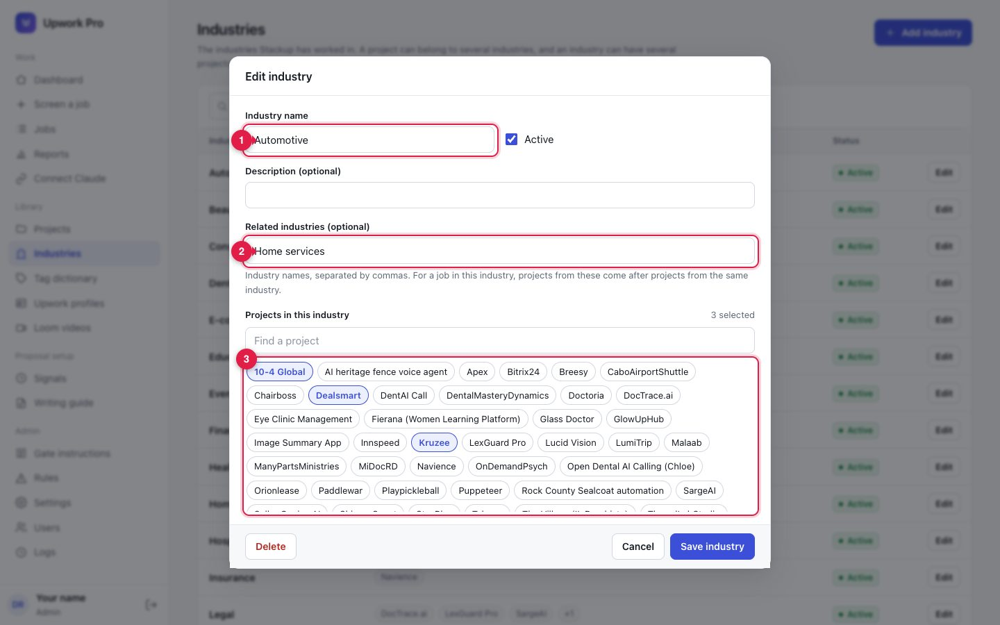
- 1The name.
- 2Related industries, separated by commas. For a job in this industry, projects from these come right after projects from the same one.
- 3The projects in it.
Tag dictionary (admin)
The words jobs and projects are described with.
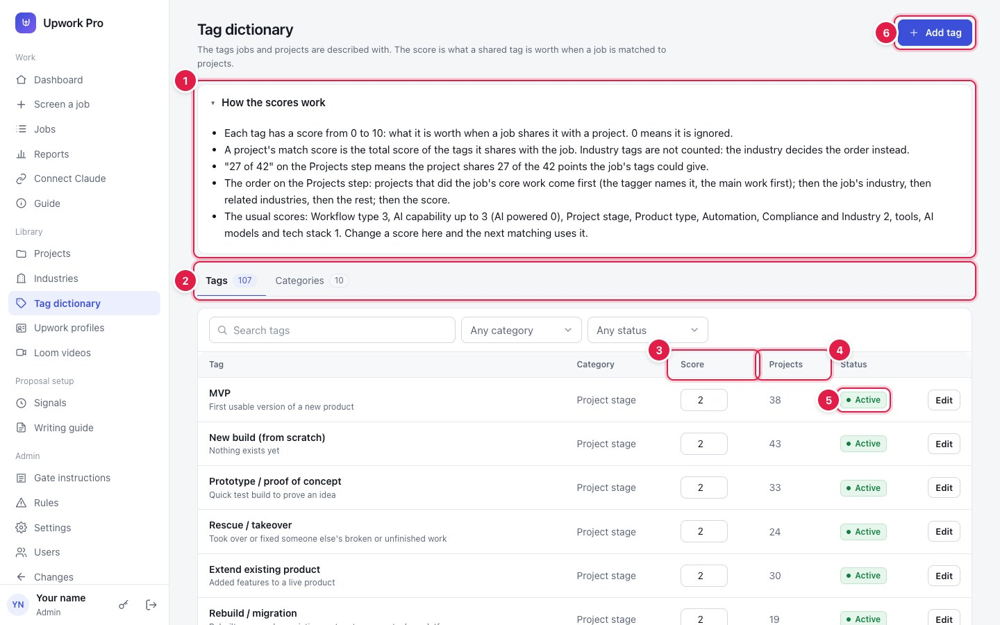
- 1How the scores work: open it to read what a score does in matching, with an example.
- 2Tags and their categories.
- 3The score: what a shared tag is worth when matching. Type a new number and it is saved. 0 means ignored.
- 4How many projects have the tag. A tag no project has does nothing for matching.
- 5Click Active to switch a tag off (or back on) straight from the list. It asks you to confirm first. Every list works this way.
- 6Add tag.
Edit a tag
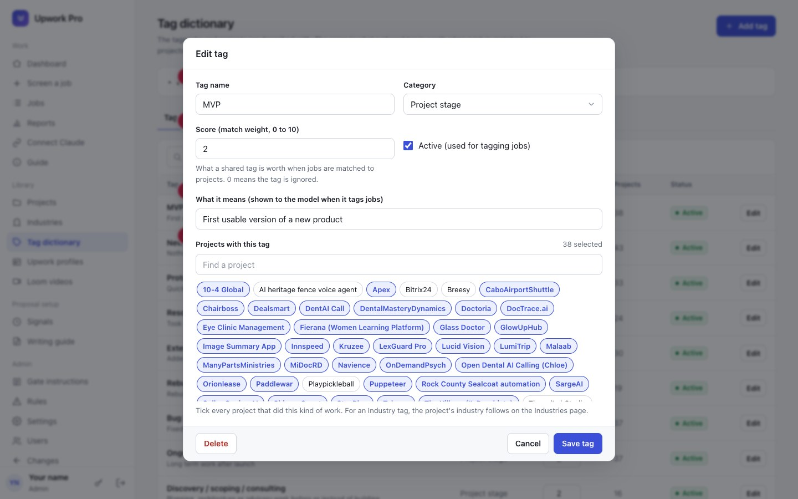
- 1The name.
- 2The score, 0 to 10.
- 3What it means. The AI reads this when it tags a job, so one clear sentence matters.
- 4The projects that have this tag. Search, and tick or untick them here, without opening each project.
Upwork profiles (admin)
The profiles we apply from.
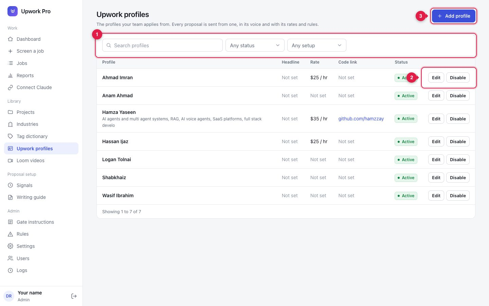
- 1Search, status, and "Needs filling in" to find profiles without a rate or headline.
- 2Edit and Disable.
- 3Add profile.
Edit a profile
Every field here is used by the writer. An empty field means the writer has nothing to say about it.
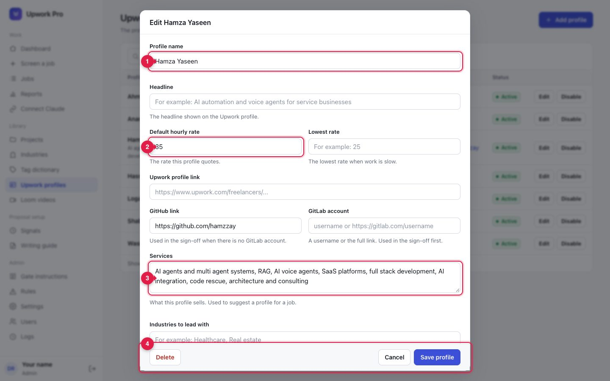
- 1The name, exactly as on Upwork.
- 2The default hourly rate, and the lowest rate.
- 3What this profile sells. Used to suggest a profile for a job.
- 4Delete is here, for mistakes only. Disable a profile instead if it has ever been used.
Further down: voice, signature, the Upwork stats allowed in proposals, profile rules, and certifications (used only when a client requires one).
Loom videos (admin)
Short videos per profile. On a job's Profile step, each profile shows the video that fits the job best.
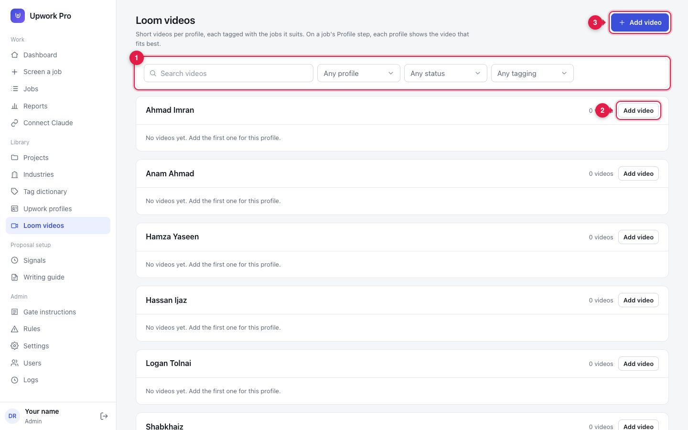
- 1Search, profile, status and "Not tagged".
- 2Add video for that profile.
- 3Add video.
Add a Loom video
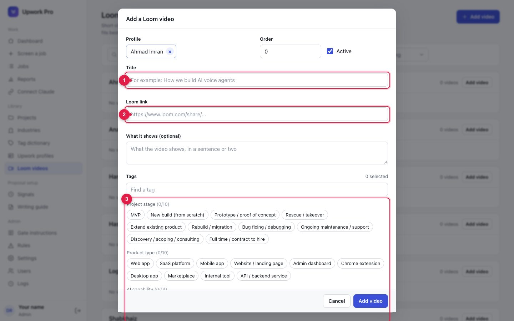
- 1A title that says what the video shows.
- 2The Loom link.
- 3The job tags it suits. A video with no tags is never suggested.
When you send a video with a proposal, record it on the job (the mark as sent window, or Overview, Edit details). That is what lets Reports compare proposals with a video against those without.
How proposals are written (setup)
Signals
What the AI looks for in a job post: who the client wants, how technical they are, whether they asked for a structure, and so on.
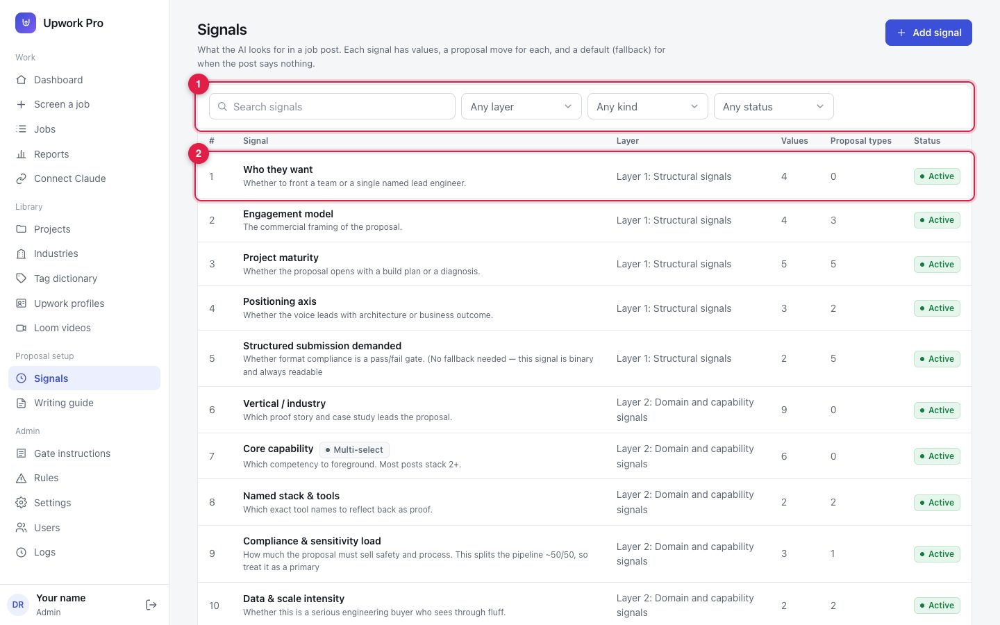
- 1Search, layer, kind and status.
- 2Click a signal to see its values.
A signal
- 1Edit signal (admin).
- 2Each value: how to spot it in a post, and what the proposal should do when it applies.
- 3Add value.
Writing guide
How every proposal is written, by Upwork Pro and by Claude alike. One copy, kept here.
- 1Four tabs: Openings (the rules for every opening and up to 10 opening templates), Proposal types (search, and show only those without samples, signals or a default opening), Rules for every proposal and Retired.
- 2A proposal type. Click it to edit (managers and admins).
- 3The button follows the tab: Add opening or Add proposal type.
A proposal type
Four tabs: Details and format, Opening, Signals and Samples.
- 1The name.
- 2Priority. Tens set the group: 10 is tried first, then 20, 30, 40.
- 3The format: the structure and rules the proposal must follow. Keep the "Chosen when" and "Length" lines. On the Opening tab, click the opening template this type is written with; the box under the cards shows what it tells the AI.
- 4Save type saves the details, the format and the opening.
When a type is chosen, and its samples
The Signals and Samples tabs of the same page, each with its own save.
- 1The signals this type suits. Required: it is only chosen when these match. Rules it out: a match excludes it. Supporting: each match adds a point.
- 2Sample proposals that worked. The writer uses up to three as a reference for tone and structure, never for facts.
The shared rules
Writing rules, banned phrases, modules, screening answers and the checklist apply to every type.
- 1The text. Edit it here.
- 2Every save is kept. Search the versions, and Load one to bring it back.
- 3Turn a document off without deleting it.
- 4Save. It applies from the next proposal, everywhere.
Rules (admin)
The fail and flag rules of the gate.
- 1Search, fail or flag, status, and "Never fired".
- 2Edit rewords a rule. Retire stops it without deleting it.
- 3Add a rule. It gets the next free code.
A code is never reused. If the meaning changes, retire the rule and add a new one, so old jobs keep their meaning.
Edit a rule
- 1The rule.
- 2How to apply it: the exceptions and how to measure it. The AI reads this with the rule.
Reviewer: how proposals are reviewed
Open Reviewer under Proposal setup. Everyone can read it; an admin changes it. It controls the independent review of every proposal, in the app and in Claude.
- 1How to review: who the reviewer is and who it reads for (the busy client).
- 2Key concerns: what matters most, one per line, most important first. Below them: Dos, Don'ts and the score guide.
- 3Load the built-in reviewer puts the original back in the editor.
- 4The versions. Saving never overwrites: activate the version every review should use.
Reviewer: limits, try it, save it
Further down the same page.
- 1How many strengths, problems and suggestions it may give. Suggestions 0 turns them off.
- 2What it reads besides the job, the proposal and our facts: the signals, the writing rules, the banned phrases, the checklist, the automatic checks.
- 3Write what you changed and why, then Save as new version. It is not used until you activate it.
- 4Try the draft on a past proposal: its review with your changes, beside the review it has now. Nothing is saved. See full prompt shows exactly what the reviewer reads.
Score limits (for example "an invented fact cannot score above 6") and how to write the review are above these. The facts it reads and the shape of the review are fixed by the app, so the app and Claude can always show it.
Gate instructions (admin)
How the gate reads and judges a job. The rules themselves come from the Rules page.
- 1The instructions.
- 2Say what you changed and why.
- 3Save as new version. Saving never overwrites.
- 4The versions. Activate the one new screenings should use.
Further down you can paste a sample job and test your draft before you activate it.
Settings (admin)
- 1Which AI does the work. Test connection before Use this AI.
- 2A number or list the app runs on.
- 3Each has its own Save. A change applies to the next job.
Settings: the review and project matching
Further down the same page.
- 1Review every proposal by itself: when off, the independent review runs only when someone asks for it.
- 2Start matching by itself when a FLAG has at most this many flags: a PASS, or a FLAG with no more flags than this, is matched and drafted straight after the screening. Use the Flag review to tune it.
- 3AI orders the matched projects: when on, the AI reads the best matches and puts them in order with a reason each. It saves when you flip it. Below: how many projects are shown, recommended and may be picked.
Settings: quick reasons and the video line
Still further down.
- 1Quick reasons to continue past a FLAG or FAIL: the one click reasons on the decide step, in the app and in Claude.
- 2Quick reasons to skip a job.
- 3The Loom video line: the words put in a proposal with a chosen video. {url} is its link, {title} its title.
Users (admin)
- 1Search, role and status.
- 2The main admin: the first admin account. Only that person can change it; other admins cannot change its role, disable it or reset its password.
- 3Change a role here.
- 4Your own row: Change password. Other rows: Reset password, and Disable when someone leaves (their jobs stay).
- 5Add user.
Add a user
- 1Their name and email.
- 2A temporary password of at least 10 characters. Give it to them privately.
- 3Their role.
Changing the setup from Claude (admins and managers)
Admins can add and change the setup by talking to Claude instead of filling in the windows above: projects, industries, tags, Upwork profiles, Loom videos, rules, signals, proposal types and their samples, the writing guide, the gate instructions, the reviewer and settings. Managers can do from Claude what they can do in the app: projects, industries, proposal types, samples and the writing guide. Employees cannot change the setup.
You need the plugin, version 0.11.0 or newer for the reviewer (Connect Claude, Download the plugin), and your Claude connected with your own sign-in.
Nothing raw goes in
The setup is read by the AI on every job, so one careless project or tag hurts every proposal after it. Claude therefore always works in the same seven steps, and you should expect each of them:
- It looks at what exists, so nothing is added twice. If the thing is already there, it offers to update it.
- It shows you two or three good examples of the same kind from our own library, so you see the shape we keep them in.
- It asks for the information, one topic at a time. Give it in any form: notes, a pasted document, a link.
- It tells you what is complete and what is missing. It never fills a gap with a guess: no invented results, numbers, clients, rates or links. What you do not know stays empty.
- It verifies what it can: that the tags, industries and names exist, that the name is free, that the links are the ones you gave.
- It rewrites everything in our standard format and shows you the final version exactly as it will be saved, with a short list of what it changed from what you gave.
- It shows the change as before and after, says what it affects, and asks "Save this?" Only your clear yes saves it.
What to say to Claude
| You want to | Say | What happens |
|---|---|---|
| Add a project | "Add a project: Kruzee" and give what you have (what it is, the case study, links) | The seven steps. Claude writes the overview and the case study in the team format (Project, Problem, Solution, Key features, Technology, Results), suggests tags from the dictionary with a reason each, and saves after your yes. |
| Change a project | "Update Breesy: the live link is now ..." or "Add the tag Twilio to Apex" | Claude shows the current value and the new one, then asks. Only what you changed is touched. |
| Add or change a tag | "Add a tag for Lawmatics under CRM tools", "Raise the score of AI voice agent to 5" | Claude explains what the score does and how many projects have the tag before it asks. |
| Add a profile, a Loom video, a rule | "Add a Loom video for Hamza's profile", "Add a flag rule for jobs that ask for free samples" | The same steps. A new rule gets the next free code; a code is never reused. |
| Change the writing guide or a setting | "Add this phrase to the banned phrases", "Show 7 projects per job instead of 5" | Long texts are shown as the lines removed and added. The earlier text is kept as a version. |
| Change the reviewer | "Add a don't for the reviewer: never praise the price", "Make the first two lines the reviewer's top concern" | Admins only. Claude shows the reviewer's current parts, changes only the ones you name, and saves a new version that is not active: try it on a past proposal on the Reviewer page, then say "activate reviewer version 2" and confirm again. |
| Change the gate instructions | "Change the gate instructions so that ..." | Two separate steps, on purpose. First the new text is saved as a version that is not active: test it on a past job in the app (Gate instructions). Then say "activate version 5" and confirm again. |
| Stop using something | "Switch off the project Tolba" | Nothing is ever deleted from Claude. The item is switched off and can be switched on again. |
| See what changed | "What changed in the setup this week?", "What did Daniel change?", "What is waiting for review?" | The list of changes: who, when, from the app or from Claude, what, and the reason. |
| Undo a change (main admin) | "Put back change 75" | The item returns to exactly how it was before that change. If it was changed again later, Claude says what else would be undone and asks a second time. |
Changes: every change is kept, and can be put back
Open Changes in the sidebar (admins). Every change to the setup is here, whether it was made in the app or from Claude.
- 1How many changes by other admins the main admin has not looked at yet. They are already applied.
- 2Search and filters: status, what was changed, who, the app or Claude, and dates.
- 3One change: when, who, what, and each field as before and after. A change from Claude also shows the reason given in the chat.
- 4To review: made by an admin other than the main admin. The main admin sees Seen and Put back on each row.
The main admin is the first admin account. A change by any other admin applies at once and waits here, marked To review, until the main admin marks it seen or puts it back. Put back returns the item to exactly how it was; that is itself kept as a change.
Reading the numbers
Dashboard
How the team is doing right now.
- 1The period, and filters for a profile or a person.
- 2The headline numbers. Click any of them to open those jobs.
- 3The funnel, from screened to hired.
- 4How fast we get from paste to proposal.
- 5Screen a job.
Reports
What is working and what is not.
- 1The period, whether dates mean screened or sent, and filters.
- 2The rates, of sent proposals: viewed, chat opened, interview, hired, and what a hire costs in Connects.
- 3The funnel. Each step shows its share of the step before.
- 4What is working: the best group in each report, against the others. It only speaks when there are enough sent proposals to mean something.
- 5Export every report as one file.
Break it down
The same jobs, cut 27 ways: by profile, person, proposal type, project, industry, tag, signal, rule, Loom video, day sent, client country and more.
- 1Choose the report, and "At least 5 sent" to hide groups too small to trust.
- 2Click a column title to sort by it.
- 3Click a row to open the jobs behind it.
- 4Every report as a small card. Click one to open it in full.
A rate is only as good as what was recorded. If statuses are not updated, the reports are wrong. A group with three sent proposals proves nothing: look for groups with ten or more.
Flag review: which rules to relax
Open Flag review (managers and admins). For every gate rule: what people did when it fired, and how those jobs went. After a couple of hundred jobs it shows which flags are too strict, without losing the ones that protect us.
- 1How many jobs are screened, against the 200 the hints are built for, and the clean passes everything is compared with.
- 2Search, and filter by hint, by fail or flag, and by active or retired.
- 3How often people continued past the rule, and how many were skipped. Open Reasons and details for the quick reasons picked each way, and for jobs where it was the only rule that fired.
- 4How the continued proposals did once sent, against clean passes.
- 5The hint: Candidate to relax (usually continued, and those jobs do as well as passes), Keep it (continued, but those jobs rarely get a reply), Doing its job (mostly skipped), Mixed, or Too few jobs yet.
A hint is a starting point. Read the reasons and open the jobs before an admin rewords or retires a rule on the Rules page.
Logs (admin)
- 1Activity: who did what. AI calls: every call to the AI, how long it took and whether it failed.
- 2Filters.
Five habits that keep it working
- Paste the whole job page, with the client section. The gate can only judge what it sees.
- Update the status the same day: Sent, Viewed, Chat opened, Interview, and the outcome with its reason.
- Record Connects, boost and the Loom video on every sent proposal.
- Pick a quick reason, and add your own words, when you continue past a flag or a fail. The Flag review counts them, so they decide which rules we relax.
- Fix the library, not the proposal. If the writer says something wrong about a project or a profile, correct it in the library so the next proposal is right too.
When something goes wrong
| You see | Do this |
|---|---|
| The screening did not finish | Open the job, Screening tab, press Try again. |
| A step is grey | Finish the step before it. The Overview tab says which. |
| You cannot continue or pick projects | Only the person who screened the job can. Ask them, or a manager. |
| The proposal signs off as the wrong profile | Pick the right profile on the Profile tab: the sign off is updated by itself. If you edited the text, the new sign off is offered above the editor. |
| "Mark as sent" is refused | Finish the proposal first (Proposal tab, Finish proposal). |
| Claude says the token was rejected | Connect Claude again, or make a new token. |
Pictures show Upwork Pro as of 9 to 14 October 2026. To update this guide, edit guide/build.py and run it.